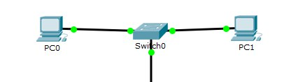
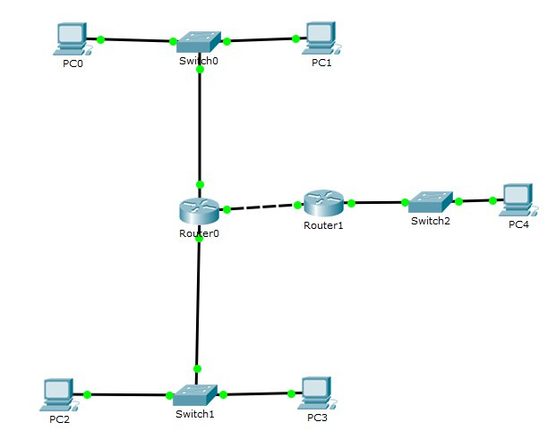

Лабораторная работа №1
Экосистема разработки программ с открытым кодом
Создание персональной страницы-отчета на GitHub и работа с git.
Открыть задачи- Зарегистрироваться на GitHub. Страница пользователя
- Создать персональную веб страницу-отчет с использованием html, css, js. Персональная страница-отчет. Исходный код на index.html и css.
- Загрузить персональную веб страницу-отчет в репозиторий ИДМ-17 по курсу "Интернет-технологии" на GitHub. Папка с исходными кодами в репозитории.
Лабораторная работа №2
Разработка простого Web-приложения
Проектирование и разработка индивидуального или коллективного веб-приложения (SPA) с использованием HTML, CSS, JavaScript + JSON/XML.
Открыть требования к приложению- Собрать команду для разработки веб-приложения (SPA) и распределить роли.Страница команды.
- Сделать разметку страницы по макету. Макет страницы. Исходный код на index.html.
- Прописать стили страницы. Исходный код на CSS.
- Прописать JavaScript-функционал и реализовать возможность чтения JSON/XML. Исходный код на JavaScript и JSON.
Лабораторная работа №3
Настройка локальной сети передачи данных
Настройка коммутаторов и маршрутизаторов
Открыть отчетЦель данной работы – ознакомиться с принципами работы компьютерных сетей, базовой настройкой сетевого оборудования и статической маршрутизацией.
Расчет диапазонов подсетей.
| LAN A | LAN B | LAN C | |
|---|---|---|---|
| Количество хостов в сети | 9 | 1765 | 190 |
| Префиксная маска | /28 | /21 | /24 |
| Адрес подсети: | 192.168.1.0 | 172.16.1.0 | 10.10.1.0 |
| Адрес первого хоста: | 192.168.1.1 | 172.16.1.0 | 10.10.1.1 |
| Адрес последнего хоста: | 192.168.1.14 | 172.16.7.254 | 10.10.1.254 |
| Broadcast | 192.168.1.15 | 172.16.7.255 | 10.10.1.255 |
Расчет адресов устройств.
| Устройство | IP | Маска | Шлюз по умолчанию |
|---|---|---|---|
| PC0 | 192.168.1.2 | 255.255.255.240 | 192.168.1.1 |
| PC1 | 192.168.1.14 | 255.255.255.240 | 192.168.1.1 |
| PC2 | 10.10.1.2 | 255.255.255.0 | 10.10.1.1 |
| PC3 | 172.16.0.2 | 255.255.248.0 | 172.16.0.1 |
| PC4 | 172.16.7.254 | 255.255.248.0 | 172.16.0.1 |
1. Разместить два компьютера и коммутатор, настроить между ними адресацию.

2. Добавить еще один коммутатор с двумя компьютерами и маршрутизаторы. Провести настройку.

3. Настроить статическую маршрутизацию при помощи команды: ip route [сеть назначения] [маска] [маршрут].
4. Установить баннер на сетевое оборудование: banner motd [баннер].
Подготовка к экзамену
Формулировка одного вопроса по теме "Интернет-технологии":
Показать вопрос:- OL
- DL
- UL
- DT Ответ:
Какой из приведенных тегов позволяет создавать нумерованные списки?
OL
:
: